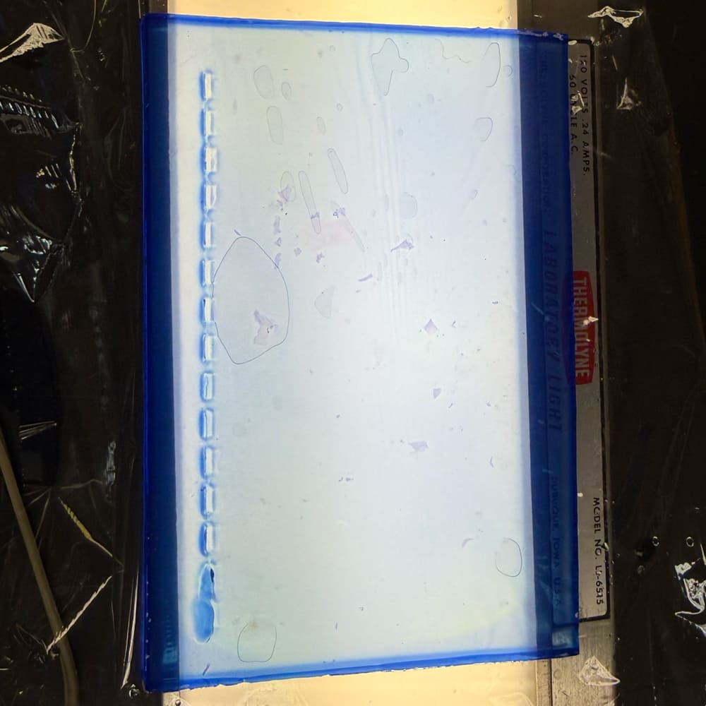
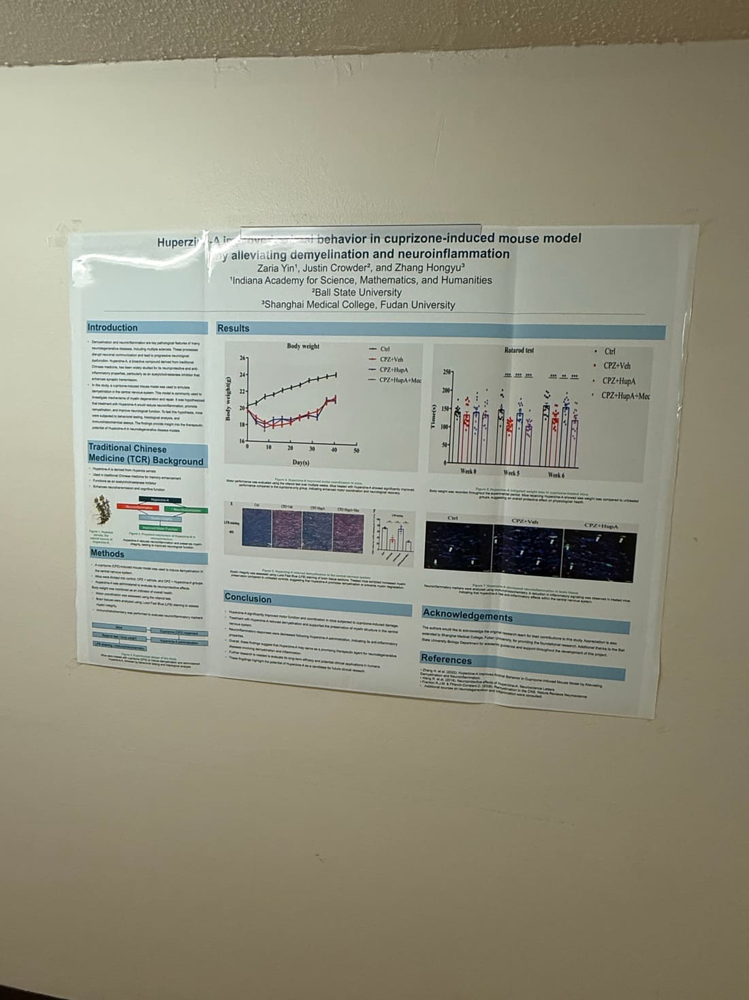
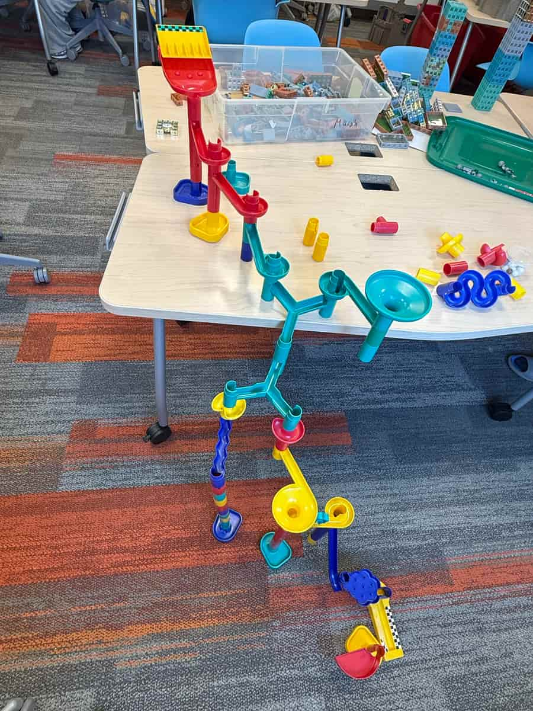
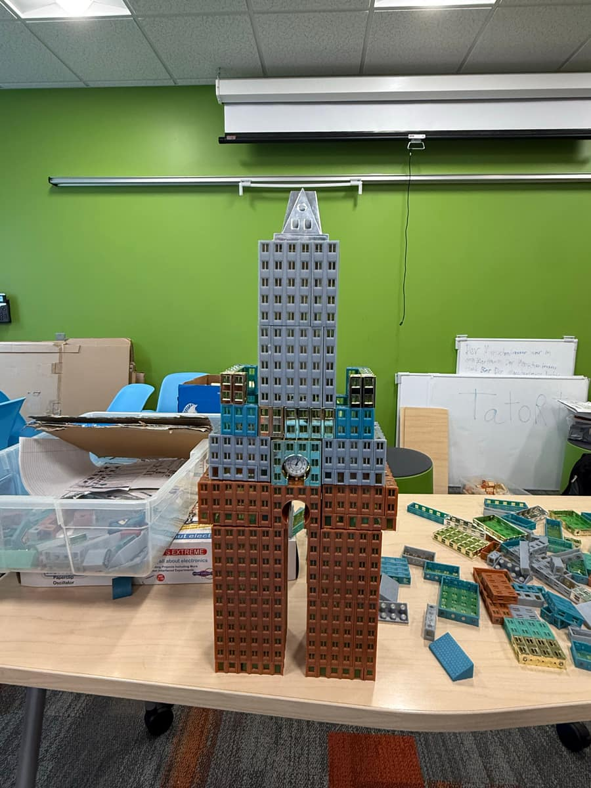
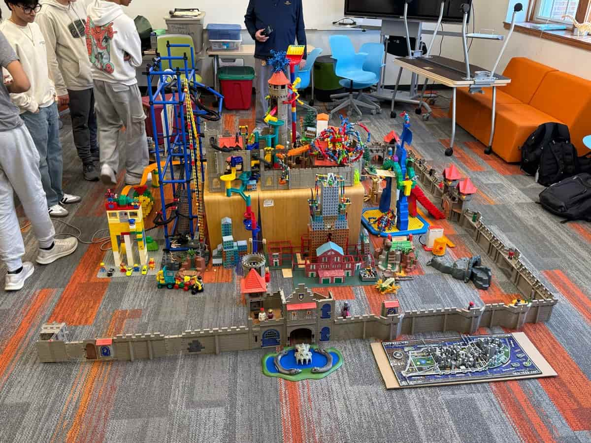
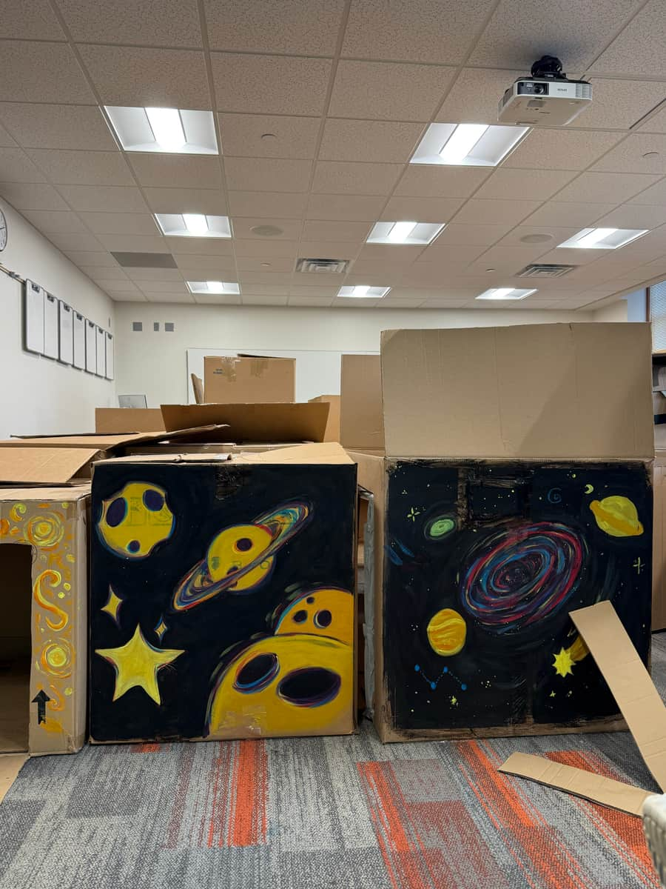

Psychology
Psychology, in and beyond class
My study includes psychology coursework at Ball State University and a six-week online psychology course through UC Berkeley Pre-College Scholars.
Follow the question ↗05 / Learning
My learning moves between psychology coursework, lab reading, languages, and building things. This notebook connects those experiences with questions I want to keep exploring.
AP Biology · Coursework

Hands-on experiments were one part of AP Biology. This photograph records an experiment I worked on during the course.

For my AP Biology final project in 2025, I selected and read a published research paper that used methods covered in the course. I then made a poster and presented it.
The assignment connected reading scientific literature with explaining its methods and findings in a visual presentation.
May term · Making & collaboration
During May term, I made individual pieces and worked with others on larger projects. These photographs show both kinds of participation.




Rather than saving every passage, I want to leave a reading session with a clear question and a short account of what the source actually supports.
A personal experiment
A screenshot can preserve something that caught my attention without preserving why it mattered. As I sort through saved posts, I am developing a way to turn a few of them into useful notes.
Source → Idea in my own words → What needs checking → One next step → Review
The aim is a collection I can return to and use. Saving something marks my interest; deciding what it supports takes another step.
A living notebook
Psychology
My study includes psychology coursework at Ball State University and a six-week online psychology course through UC Berkeley Pre-College Scholars.
Follow the question ↗Personal systems
Sorting screenshots gives me a practical question: which ideas deserve a source check, a place in my reference notes, or a small experiment?
The personal manual ↗Language
I study Korean and am developing Korean Review, a learning website with vocabulary review, grammar practice, and quizzes.
Explore the repositoryA question for the next page
What changed
after I learned this?
A useful prompt to return to after a reading, a project, or an experiment.